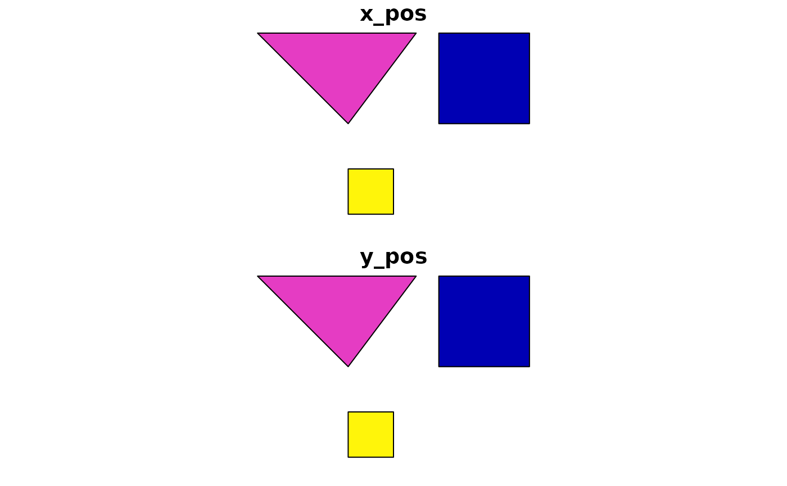
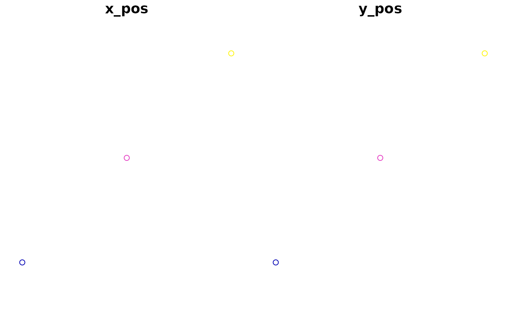
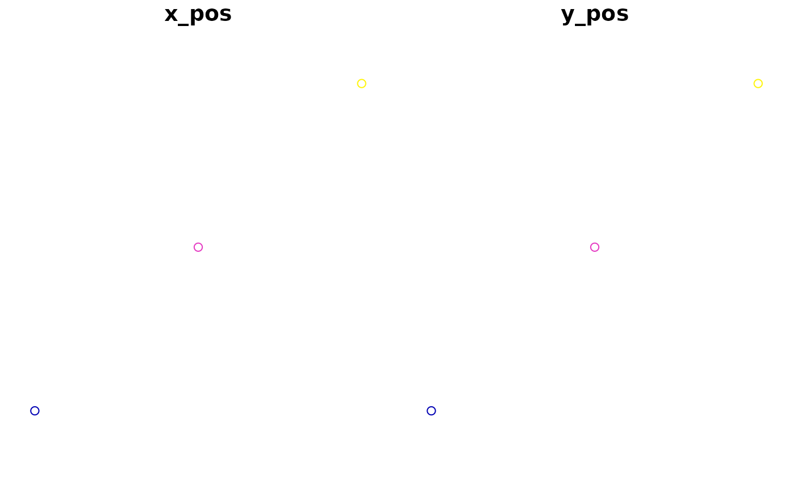

Can be generated from the polygons by specifying location to be
"centroid" or "inner", OR by specifying fields in the
attributes of the layer containing x and y coordinates.
Arguments
- input
input polygons object to convert to points. One of:
geo_jsonorcharacterpolygons;SpatialPolygons*;sforsfcpolygons object
- location
either
"centroid"or"inner". If"centroid", creates points at the centroid of the largest ring of each polygon feature. if"inner", creates points in the interior of the largest ring of each polygon feature. Inner points are located away from polygon boundaries. Must beNULLifxandyare specified. If left asNULL(default), will use centroids.- x
name of field containing x coordinate values. Must be
NULLiflocationis specified.- y
name of field containing y coordinate values. Must be
NULLiflocationis specified.- ...
Arguments passed on to
apply_mapshaper_commandsforce_FCshould the output be forced to be a FeatureCollection (or sf object or Spatial*DataFrame) even if there are no attributes? Default
TRUE. If FALSE and there are no attributes associated with the geometries, a GeometryCollection (or Spatial object with no dataframe, or sfc) will be output.sysShould the system mapshaper be used instead of the bundled mapshaper? Gives better performance on large files. Requires the mapshaper node package to be installed and on the PATH.
sys_memHow much memory (in GB) should be allocated if using the system mapshaper (
sys = TRUE)? Default 8. Ignored ifsys = FALSE. This can also be set globally with the option"mapshaper.sys_mem"quietIf
sys = TRUE, should the mapshaper messages be silenced? DefaultFALSE. This can also be set globally with the option"mapshaper.sys_quiet"gj2008Generate output that is consistent with the pre-RFC 7946 GeoJSON spec (dating to 2008). Polygon rings are CW and holes are CCW, which is the opposite of the default RFC 7946-compatible output. This should be rarely needed, though may be useful when preparing data for D3-based data visualizations (such as
plotly::plot_ly()). DefaultFALSE
Examples
library(geojsonsf)
library(sf)
poly <- structure("{\"type\":\"FeatureCollection\",
\"features\":[{\"type\":\"Feature\",\"properties\":
{\"x_pos\": 1, \"y_pos\": 2},
\"geometry\":{\"type\":\"Polygon\",
\"coordinates\":[[[102,2],[102,4],[104,4],[104,2],[102,2]]]}},
{\"type\":\"Feature\",\"properties\":{\"x_pos\": 3, \"y_pos\": 4},
\"geometry\":{\"type\":\"Polygon\",
\"coordinates\":[[[100,2],[98,4],[101.5,4],[100,2]]]}},
{\"type\":\"Feature\",\"properties\":{\"x_pos\": 5, \"y_pos\": 6},
\"geometry\":{\"type\":\"Polygon\",
\"coordinates\":[[[100,0],[100,1],[101,1],[101,0],[100,0]]]}}]}",
class = c("geojson", "json"))
poly <- geojson_sf(poly)
summary(poly)
#> x_pos y_pos geometry
#> Min. :1 Min. :2 POLYGON :3
#> 1st Qu.:2 1st Qu.:3 epsg:4326 :0
#> Median :3 Median :4 +proj=long...:0
#> Mean :3 Mean :4
#> 3rd Qu.:4 3rd Qu.:5
#> Max. :5 Max. :6
plot(poly)

# Convert to points using centroids
out <- ms_points(poly, location = "centroid")
summary(out)
#> x_pos y_pos geometry
#> Min. :1 Min. :2 POINT :3
#> 1st Qu.:2 1st Qu.:3 epsg:4326 :0
#> Median :3 Median :4 +proj=long...:0
#> Mean :3 Mean :4
#> 3rd Qu.:4 3rd Qu.:5
#> Max. :5 Max. :6
plot(out)
 # Can also specify locations using attributes in the data
out <- ms_points(poly, x = "x_pos", y = "y_pos")
summary(out)
#> x_pos y_pos geometry
#> Min. :1 Min. :2 POINT :3
#> 1st Qu.:2 1st Qu.:3 epsg:4326 :0
#> Median :3 Median :4 +proj=long...:0
#> Mean :3 Mean :4
#> 3rd Qu.:4 3rd Qu.:5
#> Max. :5 Max. :6
plot(out)

# Can also specify locations using attributes in the data
out <- ms_points(poly, x = "x_pos", y = "y_pos")
summary(out)
#> x_pos y_pos geometry
#> Min. :1 Min. :2 POINT :3
#> 1st Qu.:2 1st Qu.:3 epsg:4326 :0
#> Median :3 Median :4 +proj=long...:0
#> Mean :3 Mean :4
#> 3rd Qu.:4 3rd Qu.:5
#> Max. :5 Max. :6
plot(out)
